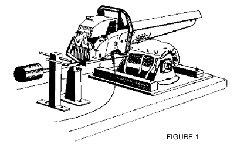

Contents
8.1 Definitions
GENERAL REQUIREMENTS
8.2 Responsibility to provide
8.3 Selection, use and maintenance
8.4 Workplace evaluation
8.5 Program
8.6 Annual review
8.7 Instruction
8.8 Supervisor's responsibilities
8.9 Worker's responsibilities
8.10 Personal clothing and accessories
SAFETY HEADGEAR
8.11 General requirement
8.12 Use with all-terrain vehicles, snowmobiles, motorcycles
8.13 Use with bicycles and skates
EYE AND FACE PROTECTION
8.14 Eye protection
8.15 Glass lenses
8.16 Side protection
8.17 Face protection
8.18 Contact lenses [Repealed]
LIMB AND BODY PROTECTION
8.19 General requirement
8.20 Cleaning or replacement
8.21 Leg protection
Schedule 8-A WorkSafeBC Standard — Leg Protective Devices
FOOTWEAR
8.22 General requirement
8.23 Slippery surfaces
HIGH VISIBILITY AND DISTINGUISHING APPAREL
8.24 High visibility apparel
8.25 Distinguishing apparel
BUOYANCY EQUIPMENT
8.26 When required
8.27 Compliance with standards
8.28 Working alone
8.29 Record of inspection and maintenance
8.30 Retroreflective material
FLAME RESISTANT CLOTHING
8.31 When required
RESPIRATORS
8.32 When respirator required
8.33 Selection
8.34 Maximum use concentration
Table 8-1: Respirator protection factors
8.35 IDLH or oxygen deficient atmosphere
8.36 Emergency escape respirators
8.37 Respirable air quality
8.38 Corrective eyewear
8.39 Face seal
8.40 Fit tests
8.41 User seal check
8.42 Medical assessment
8.43 Optional use
8.44 Records
8.45 Maintenance and inspections
Personal Protective Clothing and Equipment Definitions
8.1 Definitions
(1) In this Part
"flame resistant" in reference to clothing, means made of a material that, due to its inherent properties or as a result of treatment by a flame retardant, will slow, terminate or prevent flaming combustion;
"lifejacket" means a device that, when worn correctly, provides a specified buoyancy that will turn the wearer face-up on entering the water, and will keep the wearer in this position;
"personal flotation device (PFD)" means a device that, when worn correctly, provides a specified buoyancy to support a conscious person in an upright or backward leaning position, but is not designed to turn a person from a face-down to a face-up position in the water;
"specific location" means a yard, plant, or other clearly defined and limited area in which mobile equipment is operated, but does not include an entire municipality, district, transient forestry operation, construction site, pipeline or road right-of-way.
(2) In this Part, "8-hour TWA limit", "ACGIH", "ceiling limit" and "short-term exposure limit" have the same meaning as in section 5.1.
[Amended by B.C. Reg. 20/2006, effective May 17, 2006.]
[Amended by B.C. Reg. 312/2010, effective February 1, 2011.]
[Amended by B.C. Reg. 139/2021, effective September 1, 2021.]
General Requirements
8.2 Responsibility to provide
(1) A worker is responsible for providing
(a) clothing needed for protection against the natural elements,
(b) general purpose work gloves and appropriate footwear including safety footwear, and
(c) safety headgear.
(2) An employer is responsible for providing, at no cost to the worker, all other items of personal protective equipment required by this Regulation.
(3) If the personal protective equipment provided by the employer causes allergenic or other adverse health effects, the employer must provide appropriate alternate equipment or safe measures.
(4) Nothing in this section precludes or alters an existing or future agreement between a worker or workers and an employer to the effect that the employer will be responsible for the provision either at no cost or some cost to the worker, of any or all of the items described in subsection (1).
Note: Part 8 provides requirements for most types of protective clothing and equipment. See Part 7 on Noise for hearing protection requirements.
8.3 Selection, use and maintenance
(1) Personal protective equipment must
(a) be selected and used in accordance with recognized standards, and provide effective protection,
(b) not in itself create a hazard to the wearer,
(c) be compatible, so that one item of personal protective equipment does not make another item ineffective, and
(d) be maintained in good working order and in a sanitary condition.
(2) If the use of personal protective equipment creates hazards equal to or greater than those its use is intended to prevent, alternative personal protective equipment must be used or other appropriate measures must be taken.
[Amended by B.C. Reg. 312/2003, effective October 29, 2003.]
8.4 Workplace evaluation
If an evaluation of workplace conditions is required to determine appropriate personal protective equipment, the evaluation, where practicable, must be done in consultation with the joint committee or the worker health and safety representative, as applicable, and with the worker who will use the equipment.
8.5 Program
If personal protective equipment is required to protect against a chemical exposure or an oxygen deficient atmosphere the employer must implement an effective protective equipment program at the workplace which includes
(a) a statement of purpose and responsibilities,
(b) written procedures for selection, use, inspection, cleaning, maintenance and storage of protective equipment, when required,
(c) instruction and training in the correct use and maintenance of the equipment,
(d) for respirators, medical assessment of respirator wearers, when required,
(e) documentation when required, and
(f) program review.
[Amended by B.C. Reg. 312/2010, effective February 1, 2011.]
8.6 Annual review
(1) The personal protective equipment program must be reviewed annually by the employer in consultation with the joint committee or the worker health and safety representative, as applicable.
(2) The annual review must
(a) assess exposure control measures to ensure their continued effectiveness,
(b) determine the need for further control,
(c) ensure the adequacy of instruction, and
(d) for respirators, assess the adequacy of exposure monitoring data and assess the need for further monitoring, and ensure the adequacy of the fit test program.
[Amended by B.C. Reg. 312/2010, effective February 1, 2011.]
8.7 Instruction
The employer must ensure that a worker who wears personal protective equipment is adequately instructed in the correct use, limitations and assigned maintenance duties for the equipment to be used.
8.8 Supervisor's responsibilities
The supervisor must ensure that appropriate personal protective equipment is
(a) available to workers,
(b) properly worn when required, and
(c) properly cleaned, inspected, maintained and stored.
8.9 Worker's responsibilities
(1) A worker who is required to use personal protective equipment must
(a) use the equipment in accordance with training and instruction,
(b) inspect the equipment before use,
(c) refrain from wearing protective equipment outside of the work area where it is required if to do so would constitute a hazard, and
(d) report any equipment malfunction to the supervisor or employer.
(2) A worker who is assigned responsibility for cleaning, maintaining or storing personal protective equipment must do so in accordance with training and instruction provided.
8.10 Personal clothing and accessories
(1) The personal clothing of a worker must be of a type and in a condition which will not expose the worker to any unnecessary or avoidable hazards.
(2) If there is a danger of contact with moving parts of machinery or with electrically energized equipment, or if the work process presents similar hazards
(a) the clothing of the worker must fit closely about the body,
(b) dangling neckwear, bracelets, wristwatches, rings or similar articles must not be worn, except for medical alert bracelets which may be worn with transparent bands that hold the bracelets snugly to the skin, and
(c) cranial and facial hair must be confined, or worn at a length which will prevent it from being snagged or caught in the work process.
Safety Headgear
8.11 General requirement
(1) Before a worker starts a work assignment in a work area where there is a risk of head injury to the worker from falling, flying or thrown objects, or other harmful contacts, the employer must take measures to
(a) eliminate the risk, or
(b) if it is not practicable to eliminate the risk, minimize the risk to the lowest level practicable by applying the following control measures in order of priority:
(i) engineering controls;
(ii) administrative controls;
(iii) requiring the worker to wear safety headgear.
[Enacted by B.C. Reg. 139/2021, effective September 1, 2021.]
(2) Safety headgear must meet the requirements of one of the following standards
(a) CSA Standard CAN/CSA-Z94.1-05 or CAN/CSA-Z94.1-15, Industrial protective headwear – Performance, selection, care, and use;
(b) ANSI Standard ANSI/ISEA Z89.1-2009 or ANSI/ISEA Z89.1-2014, American National Standard for Industrial Head Protection.
(3) If a worker may be exposed to an electrical hazard the safety headgear must have an appropriate non-conductive rating.
(4) Chin straps or other effective means of retention must be used on safety headgear when workers are climbing or working from a height exceeding 3 m (10 ft), or are exposed to high winds or other conditions that may cause loss of the headgear.
(5) Repealed. [B.C. Reg. 381/2004, effective January 1, 2005.]
(6) Damaged headgear or headgear with missing, mismatched, or modified components must be removed from service.
[Amended by B.C. Reg. 312/2003, effective October 29, 2003.]
[Amended by B.C. Reg. 14/2019, effective June 3, 2019.]
8.12 Use with all-terrain vehicles, snowmobiles, motorcycles
(1) Operators and passengers on all-terrain vehicles, snowmobiles and motorcycles must wear headgear meeting the requirements of
(a) CSA Standard CAN3-D230-M85, Protective Headgear in Motor Vehicle Applications,
(b) British Safety Institution Standard BS5361.1976, Specification: Protective Helmets for Vehicle Users, (as amended to 1981),
(c) Snell Memorial Foundation 1995 Standard for Protective Headgear for Use with Motorcycles and Other Motorized Vehicles, or
(d) US Federal Standard for Motorcycle Helmets (Title 49 - Transportation - Part 571.218).
(e) Repealed. [B.C. Reg. 312/2003, effective October 29, 2003.]
(2) Headgear in good condition meeting earlier editions of a standard listed in subsection (1) may remain in service if purchased before April 15, 1998.
(3) When an all-terrain vehicle is operated within a specific location, with no rollover hazard area and no area containing a significant hazard that may cause loss of control and at a speed not exceeding 20 km/h (13 mph), safety headgear meeting the requirements of section 8.13 may be used in place of headgear specified in subsection 8.12(1).
[Amended by B.C. Reg. 312/2003, effective October 29, 2003.]
[Amended by B.C. Reg. 139/2021, effective September 1, 2021.]
8.13 Use with bicycles and skates
(1) A worker riding a bicycle or using in-line skates or similar means of transport must wear headgear meeting the requirements of
(a) CSA Standard CAN/CSA-D113.2-M89, Cycling Helmets,
(b) Snell Memorial Foundation 1994 Standard for Protective Headgear for Use in Non-Motorized Sports
(c) Snell Memorial Foundation 1995 Standard for Protective Headgear for Use in Bicycling,
(d) Repealed. [B.C. Reg. 312/2003, effective October 29, 2003.]
(e) American Society for Testing and Materials Standard ASTM F1447-06 (Standard Specification for Helmets Used in Recreational Bicycling or Roller Skating), or
(f) Snell Memorial Foundation Standard B-90A (1998 Augmentation to the 1990 Standard for Protective Headgear).
(2) If a bicycle or similar conveyance is operated at speeds not exceeding 20 km/h (13 mph) within a specific location, safety headgear meeting the requirements of section 8.11 is acceptable when worn with a chin strap.
[Amended by B.C. Reg. 312/2003, effective October 29, 2003.]
[Amended by B.C. Reg. 229/2025, effective April 1, 2026.]
Eye and Face Protection
8.14 Eye protection
(1) In this section and sections 8.15 to 8.17, "eye protection" means personal protective equipment for the eyes.
(2) A worker must wear eye protection if the worker is in an area of the workplace where one or more hazards involving the eyes exist, or are created, due to conditions or activities conducted in the area.
(3) Eye protection that is required to be worn under subsection (2), or under any other provision of this Regulation, must meet all of the following requirements:
(a) the eye protection must fit the worker properly;
(b) the eye protection must provide the worker with appropriate protection from the eye hazards referred to in subsection (2);
(c) the eye protection must meet the requirements set out in one of the following standards:
(i) CSA Standard CAN/CSA-Z94.3-07 or Z94.3-15, Eye and Face Protectors;
(ii) ANSI Standard ANSI/ISEA Z87.1-2015, Occupational and Educational Personal Eye and Face Protection Devices.
(4) To determine whether eye protection provides a worker with appropriate protection from the eye hazards referred to in subsection (2), all factors relevant to the nature and extent of each of those eye hazards must be considered, including, without limitation, the following:
(a) the form of the hazard;
(b) the manner in which the hazard may be transmitted;
(c) the injury or occupational disease that could occur as a result of the hazard.
[Enacted by B.C. Reg. 14/2019, effective June 3, 2019.]
8.15 Glass lenses
(1) Except as permitted by subsection (2), eyeglasses or eye protection with glass lenses must not be worn by a worker in an area of the workplace where there is a risk, due to conditions in the area or the activities conducted in it, that something could damage the glass lenses and cause an injury to the eye.
(2) Eyeglasses or eye protection with glass lenses may be worn by a worker in an area of the workplace described in subsection (1) if, covering the glass lenses, the worker wears eye protection that meets one of the following:
(a) the impact resistance requirements set out in clause 6.1 of a standard referred to in section 8.14(3)(c)(i);
(b) the impact rated requirements set out in section 6 of the standard referred to in section 8.14(3)(c)(ii).
[Enacted by B.C. Reg. 14/2019, effective June 3, 2019.]
8.16 Side protection
(1) Eye protection must have side protection if an eye hazard referred to in section 8.14(2) could reach a worker's eye through an unprotected area beside the eye.
(2) Despite section 8.14(3)(c)(i), removable side shields may be used for eye protection under subsection (1).
[Enacted by B.C. Reg. 14/2019, effective June 3, 2019.]
8.17 Face protection
(1) In this section, "face protection" means personal protective equipment for the face.
(2) A worker must wear face protection covering the worker's eye protection if the worker is in an area of the workplace where one or more hazards involving the face exist, or are created, due to conditions in the area or the activities conducted in it.
(3) Face protection that is required to be worn under subsection (2), or under any other provision of this Regulation, must meet all of the following requirements:
(a) the face protection must fit the worker properly;
(b) the face protection must provide the worker with appropriate protection from the face hazards referred to in subsection (2);
(c) the face protection must meet the requirements set out in one of the standards referred to in section 8.14(3)(c).
(4) To determine whether face protection provides a worker with appropriate protection from the face hazards referred to in subsection (2), all factors relevant to the nature and extent of each of those face hazards must be considered, including, without limitation, the factors described in section 8.14(4)(a), (b) and (c).
[Enacted by B.C. Reg. 14/2019, effective June 3, 2019.]
8.18 Contact lenses
Repealed. [B.C. Reg. 14/2019, effective June 3, 2019.]
Limb and Body Protection
8.19 General requirement
(1) The employer must provide appropriate skin, hand, foot or body protection if a worker is exposed to a substance or condition which is likely to puncture, abrade or otherwise adversely affect the skin, or be absorbed through it.
(2) If there is a danger of injury, contamination or infection to a worker's hands, arms, legs, or torso, the worker must wear properly fitting protective equipment appropriate to the work being done and the hazards involved.
8.20 Cleaning or replacement
If a glove, apron, or other protective equipment used to protect the skin against contact with a hazardous substance is rendered ineffective due to contamination with the substance, the protective equipment must be promptly replaced with clean or decontaminated equipment to maintain the required protection.
8.21 Leg protection
(1) Leg protective devices must be worn by a worker operating a chain saw.
(2) Leg protective devices referred to in subsection (1) must meet or exceed
(a) the general requirements of section 4 of the WorkSafeBC Standard - Leg Protective Devices, as set out in Schedule 8-A of this Part, and
(b) the performance requirements of one of the following standards, using the cut-resistance testing protocol set out in that standard except as varied in subparagraph (ii):
(i) WorkSafeBC Standard - Leg Protective Devices, as set out in section 5 of Schedule 8-A of this Part, applying a threshold chain speed of 18.3 metres per second or 3 600 feet per minute;
(ii) ASTM F 1414-04 Standard Test Method for Measurement of Cut Resistance to Chain Saw in Lower Body (Legs) Protective Clothing, but applying a threshold chain speed of 16.8 metres per second or 3 300 feet per minute;
(iii) ISO 11393-2 Protective clothing for users of hand-held chain-saws - Part 2: Test methods and performance requirements for leg protectors, applying a Class 2 threshold chain speed of 24 metres per second or 4 724 feet per minute;
(iv) BS EN 381-5:1995 Protective clothing for users of hand-held chain saws - Part 5: Requirements for leg protectors, applying a Class 2 threshold chain speed of 24 metres per second or 4 724 feet per minute.
(3) A leg protective device worn by a worker must have a label that
(a) is permanently affixed,
(b) uses lettering that is at least 6 mm (1/4 in) high, and
(c) clearly indicates all of the following information:
(i) the name or trademark of the manufacturer;
(ii) the standard met or exceeded under subsection (2)(a);
(iii) the standard met or exceeded under subsection (2)(b);
(iv) the year of manufacture of the device unless otherwise marked on the device.
(4) The requirement to wear leg protective devices does not apply to a firefighter using a chain saw at the scene of a structural fire.
[Amended by B.C. Reg. 312/2003, effective October 29, 2003.]
[Amended by B.C. Reg. 312/2010, effective February 1, 2011.]
SCHEDULE 8-A
(section 8.21 [leg protection])WORKSAFEBC STANDARD — LEG PROTECTIVE DEVICES
1 Scope
This standard provides specifications and performance criteria for leg protection for a worker using a chain saw.
2 Definition
In this standard, "leg protection" or "leg protective device" means personal protective equipment worn for protection from leg injury due to contact with a moving saw chain.
3 Types of leg protection
Leg protection must be of one of the following types:
(a) pant type: the protective pad is secured to and held in position by the trousers;
(b) apron type: the protective pad is secured to an apron style garment normally worn outside the trousers and secured around the worker's legs and waist;
(c) chap type: the protective pad is secured to a chap style garment normally worn outside the trousers and secured around the worker's legs.
4 General requirements
(1) Leg protection must be of materials suitable for the intended application.
(2) Leg protection
(a) must not unduly restrict the manoeuvrability of the worker, and
(b) must not shrink more than 10% when cleaned in accordance with the manufacturer's instructions during its service life.
(3) The protective pad of leg protection must be at least 711 mm (28 in) long and of a width covering 180° in the front of both legs from inseam to outseam plus 100 mm (4 in) on the left side of both legs.
(4) If the length requirement in subsection (3) results in a tripping hazard, the protective pad may be shorter, as long as it meets the requirements set out in subsection (5).
(5) When leg protection is worn by a worker, the protective pad
(a) must extend at minimum from the crotch to within 75 mm (3 in) of the ankle, and
(b) must be effectively secured in this position.
(6) Effective measures must be taken to prevent unravelling or fraying of material along any edges or other area of leg protection where unravelling or fraying is likely to occur.
(7) A heat seal used to control unravelling or fraying of synthetic fibres of leg protection
(a) must be effective over the life of the product, and
(b) if subject to cracking, must be covered to prevent abrasion of the worker's skin.
(8) Instructions on the proper care, maintenance and repair of leg protection must be provided by the manufacturer.
(9) Leg protection showing damage that will affect its performance must be removed from service.
5 Cut-resistance testing protocol and performance requirements
(1) Leg protection must meet or exceed the "threshold chain speed test" in which the protective pad must be able to consistently resist being cut-through by a running saw chain operating at a speed of 1 098 m/min (3 600 ft/min) or more for at least 1.01 seconds.
(2) Threshold chain speed tests must be conducted
(a) on leg protection samples assembled in the manner in which the leg protection will be produced for distribution, and
(b) using the test apparatus described in subsection (3) in accordance with the procedures and methodology described in this section.
(3) The test apparatus to be used in conducting a threshold chain speed test must include a simulated "leg", chain saw and instruments as follows:
(a) a simulated "leg" (see Figure 1) that is
(i) made of wood approximately 150 mm (6 in) in diameter with a 20 mm (3/4 in) layer of resilient covering (Ensolite or similar material) attached to simulate the resilience of flesh,
(ii) designed to allow the leg protection to be mounted and tested similar to the configuration the leg protection will take when worn by a worker while the worker's leg is extended, and
(iii) mounted to allow rotation about the longitudinal axis of up to 75 mm (3 in) at the outer circumference, against an applied torque of at least 1.7 Newton-metres (15 inch pounds) and which torque may increase as the leg rotates;

(b) a chain saw, with Oregon 72 LP chisel chain and capable of a chain speed of at least 1 220 m/min (4 000 ft/min), that must pivot in a vertical plane to contact the "leg" (see Figure 1) with a downward force of 50 ± 1 Newtons (11 ± 0.1 lb);
(c) instruments to measure and record chain speed and cut-through time.
(4) The test procedure and methodology are as follows:
(a) start the saw and set the chain speed to the constant level selected for the test cut;
(b) allow the bottom of the running saw chain to freefall 6 mm (¼ in) onto the test specimen mounted on the "leg";
(c) record the time from contact of the saw chain with the test specimen to the nearest 0.01 second;
(d) record the chain speed during each test;
(e) repeat the tests on the same material until the maximum chain speed (± 15 m/min or ± 50 ft/min) at which cut-through does not occur for at least 1.01 seconds or more is determined;
(f) maintain the chain saw in good repair throughout the testing and keep the saw cutters sharp in accordance with the saw chain manufacturer's recommendations.
[Enacted by B.C. Reg. 312/2010, effective February 1, 2011.]
Footwear
8.22 General requirement
(1) A worker's footwear must be of a design, construction, and material appropriate to the protection required and that allows the worker to safely perform the worker's work.
(2) To determine appropriate footwear under subsection (1), the following factors must be considered:
(a) slipping;
(b) tripping;
(c) uneven terrain;
(d) abrasion;
(e) ankle protection and foot support;
(f) potential for musculoskeletal injury;
(g) crushing potential;
(h) temperature extremes;
(i) corrosive substances;
(j) puncture hazards;
(k) electrical shock;
(l) any other recognizable hazard.
(2.1) An employer must not require a worker to wear footwear that does not comply with subsection (1).
(3) If a determination has been made that safety protective footwear is required to have toe protection, metatarsal protection, puncture resistant soles, dielectric protection or any combination of these, the footwear must meet the requirements of
(a) CSA Standard CAN/CSA-Z195-M92, Protective Footwear,
(b) ANSI Standard Z41-1991, American National Standard for Personal Protection - Protective Footwear,
(c) British Safety Institution Standard BS EN 345:1993 Specification for Safety Footwear for Professional Use, or
(d) British Safety Institution Standard BS EN 346:1993 Specification for Protective Footwear for Professional Use.
(e) Repealed. [B.C. Reg. 312/2003, effective October 29, 2003.]
(4) A worker must wear the appropriate footwear and ensure that it is in a condition to provide the required protection.
(5) If it is not practicable for workers in the performing arts to wear safety footwear meeting the requirements of subsection (3) other effective measures must be taken for protection from injury.
[Amended by B.C. Reg. 312/2003, effective October 29, 2003.]
[Amended by B.C. Reg. 140/2017, effective April 7, 2017.]
8.23 Slippery surfaces
(1) If a workplace has slippery surfaces, appropriate non-slip footwear must be worn.
(2) Caulked or other equally effective footwear must be worn by workers who are required to walk on logs, poles, pilings or other round timbers.
High Visibility and Distinguishing Apparel
8.24 High visibility apparel
(1) A worker who is exposed to vehicles or mobile equipment travelling at speeds in excess of 30 km/h must wear high visibility apparel that meets the requirements for Class 2 or Class 3 apparel in CSA Standard Z96-15, High-Visibility Safety Apparel.
(2) A worker who is exposed to vehicles or mobile equipment travelling at speeds equal to or less than 30 km/h must wear high visibility apparel that meets the requirements for Class 1, Class 2 or Class 3 apparel in CSA Standard Z96-15, High-Visibility Safety Apparel.
(3) Subsections (1) and (2) do not apply to the following:
(a) a firefighter who is wearing a protective coat that meets the requirements of the 2007, 2013 or 2018 edition of NFPA 1971, Standard on Protective Ensembles for Structural Fire Fighting and Proximity Fire Fighting;
(b) the following persons who are wearing high visibility apparel that meets the requirements for Class 2 apparel in CSA Standard Z96-15, High-Visibility Safety Apparel as modified in accordance with subsection (4):
(i) a person who is employed by British Columbia Emergency Health Services as an emergency medical assistant or in any other capacity;
(ii) a municipal constable as defined in the Police Act;
(iii) a person who is employed in the Commercial Vehicle Safety and Enforcement branch of the Ministry of Transportation and Infrastructure;
(c) a traffic control person referred to in section 18.9 of this regulation.
(4) For the purposes of subsection (3)(b), the requirements for Class 2 apparel are modified as follows:
(a) retroreflective or combined-performance stripes and bands must have
(i) a minimum width of 25 mm,
(ii) an entirely retroreflective area with a minimum width of 25 mm,
(iii) a minimum coefficient of retroreflection of 240 cd/(lx·m2) measured at an observation angle of 0.2 degrees and an entrance angle of -4 degrees in accordance with CSA Standard Z96-15, High-Visibility Safety Apparel, and
(iv) a minimum area of 0.05 m2 on the front of the apparel and 0.05 m2 on the back of the apparel;
(b) retroreflective or combined-performance stripes and bands do not have to form an "X" on the back of the apparel;
(c) the requirements relating to identification patches and lettering do not apply;
(d) background material, excluding identification patches, lettering and retroreflective or combined-performance stripes and bands, must have a minimum area of 0.13 m2 on the front of the apparel and 0.13 m2 on the back of the apparel.
[Enacted by B.C. Reg. 193/2021, effective September 1, 2021.]
8.25 Distinguishing apparel
If distinguishing apparel is required in another Part of this Regulation for the purpose of identifying a worker's location or well-being, the apparel must be of a colour which contrasts with the environment and must have at least 775 sq cm (120 sq in) of fluorescent trim for daytime use and retroreflective trim for nighttime use, on both the front and back.
Buoyancy Equipment
8.26 When required
(1) A worker who is employed under conditions which involve a risk of drowning must wear a personal flotation device (PFD) or lifejacket with sufficient buoyancy to keep the worker's head above water.
(2) Subsection (1) does not apply if other acceptable safety measures are in place which will protect workers from the risk of drowning, or the water is too shallow to allow the lifejacket or PFD to function effectively.
(3) A personal flotation device need not be worn when a personal fall protection system, guardrail or safety net is being used in accordance with the relevant requirements in Part 11 (Fall Protection) to prevent a fall into the water.
8.27 Compliance with standards
Buoyancy equipment must be labelled and otherwise meet the requirements of
(a) CGSB Standard CAN/CGSB-65.7-M88, Lifejackets, Inherently Buoyant Type with a minimum buoyancy of 93 N (21 lbs),
(b) CGSB Standard CAN/CGSB-65.11-M88, Personal Flotation Devices with a minimum buoyancy of 69 N (15.5 lbs),
(c) CGSB Standard 65-GP-14M, Lifejackets, Inherently Buoyant, Standard Type with a minimum buoyancy of 125 N (28 lbs), or
(d) British Safety Standard BS EN 396-1994, Lifejackets and Personal Buoyancy Aids - Lifejacket 150 N, automatically inflatable units with a minimum buoyancy of 150 N (34 lbs).
(e) Repealed. [B.C. Reg. 312/2003, effective October 29, 2003.]
[Amended by B.C. Reg. 312/2003, effective October 29, 2003.]
8.28 Working alone
If a worker working alone is exposed to risk of drowning, the worker must wear a lifejacket meeting the requirements of section 8.27(a), (c) or (d).
[Amended by B.C. Reg. 312/2003, effective October 29, 2003.]
8.29 Record of inspection and maintenance
If workers use inflatable personal flotation devices (PFDs) or automatically inflatable lifejackets, the employer must keep a record of all inspections made and maintenance performed on those PFDs or automatically inflatable lifejackets.
[Enacted by B.C. Reg. 14/2019, effective June 3, 2019.]
8.30 Retroreflective material
Personal flotation devices and lifejackets must have at least 200 sq cm (32 sq in) of white or silver retroreflective material fitted on surfaces that are normally above the water surface.
[Enacted by B.C. Reg. 312/2003, effective October 29, 2003.]
Flame Resistant Clothing
8.31 When required
Workers must wear flame resistant clothing appropriate to the risk if working in areas where they may be exposed to flash fires, molten metal, welding and burning or similar hot work hazards.
Respirators
8.32 When respirator required
If a worker is or might be exposed in a workplace to an air contaminant that exceeds
(a) an 8-hour TWA limit, ceiling limit or short-term exposure limit set by ACGIH for the air contaminant,
(b) a limit that is otherwise determined by the Board under section 5.48 for the air contaminant, or
(c) a limit set by section 5.49 for the air contaminant,
the employer must provide an appropriate respirator and ensure that the worker uses an appropriate respirator in accordance with section 8.34.
[Enacted by B.C. Reg. 312/2010, effective February 1, 2011.]
8.33 Selection
(1) The employer, in consultation with the worker and the occupational health and safety committee, if any, or the worker health and safety representative, if any, must select an appropriate respirator in accordance with CSA Standard CAN/CSA-Z94.4-18, Selection, Use, and Care of Respirators.
(2) Only a respirator which meets the requirements of a standard acceptable to the Board may be used for protection against airborne contaminants in the workplace.
[Amended by B.C. Reg. 312/2003, effective October 29, 2003.]
[Amended by B.C. Reg. 312/2010, effective February 1, 2011.]
[Amended by B.C. Reg. 229/2025, effective April 1, 2026.]
8.34 Maximum use concentration
(1) In subsection (2):
"established 8-hour TWA limit" means the 8-hour TWA limit set by the Board for an air contaminant, or if the Board has not set an 8-hour TWA limit for an air contaminant, the TWA limit set by ACGIH for the air contaminant;
"established ceiling limit" means a ceiling limit set by the Board for an air contaminant, or if the Board has not set a ceiling limit for an air contaminant, the ceiling limit set by ACGIH for the air contaminant;
"established short-term exposure limit" means the short-term exposure limit set by the Board for an air contaminant, or if the Board has not set a short-term exposure limit for an air contaminant, the short-term exposure limit set by ACGIH for the air contaminant.
(2) In subsection (3), "maximum use concentration" means the concentration of an air contaminant calculated in one of the following ways:
(a) if an established 8-hour TWA limit applies to the air contaminant to which a worker is or might be exposed, by multiplying
(i) the established 8-hour TWA limit for the air contaminant, and
(ii) the protection factor set out in Table 8-1 that applies to the respirator type that the worker is using;
(b) if there is no established 8-hour TWA limit that applies to the air contaminant to which a worker is or might be exposed, by multiplying
(i) the established short-term exposure limit for that air contaminant, and
(ii) the protection factor set out in Table 8-1 that applies to the respirator type that the worker is using;
(c) if there is no established 8-hour TWA limit or short-term exposure limit that applies to the air contaminant to which a worker is or might be exposed, by multiplying
(i) the established ceiling limit for that air contaminant, and
(ii) the protection factor set out in Table 8-1 that applies to the respirator type that the worker is using.
(3) The employer must ensure that a worker does not use a respirator for protection against a concentration of an air contaminant in the workplace that is greater than the maximum use concentration.
(4) The protection factor of 1 000 set out in Table 8-1: Respirator protection factors for a hood or helmet facepiece, powered (PAPR), and equipped with a HEPA filter or a sorbent cartridge or canister or both a HEPA filter and a sorbent cartridge or canister applies only if an employer who uses or wishes to use that respirator type has evidence from the manufacturer that demonstrates that
(a) the manufacturer has tested that type of respirator, and
(b) those tests demonstrate that a respirator of that type has a protection factor of at least 1 000.
(5) The protection factor of 25 set out in Table 8-1: Respirator protection factors for a hood or helmet facepiece, powered (PAPR), and equipped with a HEPA filter or a sorbent cartridge or canister or both a HEPA filter and a sorbent cartridge or canister applies if the conditions set out in subsection (4) are not met.
[Enacted by B.C. Reg. 312/2010, effective February 1, 2011.]
Table 8-1: Respirator protection factors
| Respirator type | Protection Factor |
|---|---|
| Air purifying | |
| Half facepiece, non-powered | 10 |
| Full facepiece, non-powered | 50 |
| Full facepiece, powered (PAPR), equipped with HEPA filters for exposure to asbestos | 100 |
| Full facepiece, powered (PAPR), equipped with HEPA filters and/or sorbent cartridge or canister for exposure to contaminants other than asbestos | 1 000 |
| Loose-fitting facepiece, powered (PAPR) | 25 |
| Hood or helmet facepiece, powered (PAPR), and equipped with a HEPA filter or a sorbent cartridge or canister or both a HEPA filter and a sorbent cartridge or canister, if section 8.34 (5) applies | 25 |
| Hood or helmet facepiece, powered (PAPR), and equipped with a HEPA filter or a sorbent cartridge or canister or both a HEPA filter and a sorbent cartridge or canister, if the conditions set out in section 8.34 (4) are met | 1 000 |
| Air supplying | |
| Airline - demand (negative pressure) | |
| Half facepiece | 10 |
| Full facepiece | 50 |
| Airline - continuous flow | |
| Loose-fitting facepiece/hoods | 25 |
| Half facepiece | 50 |
| Full facepiece | 1 000 |
| Helmet/hood | 1 000 |
| Airline - pressure demand (positive pressure) | |
| Half facepiece | 50 |
| Full facepiece | 1 000 |
| Full facepiece, with egress bottle | 10 000 |
| Self-contained breathing apparatus (SCBA) | |
| Demand (negative pressure) | 50 |
| Pressure demand (positive pressure) | 10 000 |
| Other factors such as warning properties, IDLH levels, and cartridge/canister limitations must also be taken into account when determining the maximum use concentration. Refer to the manufacturer's instructions and standards acceptable to the Board for further information. | |
[Amended by B.C. Reg. 20/2006, effective May 17, 2006.]
[Amended by B.C. Reg. 312/2010, effective February 1, 2011.]
8.35 IDLH or oxygen deficient atmosphere
(1) If a worker is required to enter or work in an IDLH or oxygen deficient atmosphere the worker must
(a) wear a full facepiece positive pressure respirator which is either an SCBA, or an airline respirator with an auxiliary self- contained air cylinder of sufficient capacity to permit the worker to escape unassisted from the contaminated area if the air supply fails, and
(b) be attended by at least one other worker stationed at or near the entrance to the contaminated area who is similarly equipped and capable of effecting rescue.
(2) Subsection (1)(a) applies if there is a significant risk of accidental release into a worker's breathing zone of quantities of an air contaminant sufficient to produce an IDLH atmosphere.
8.36 Emergency escape respirators
(1) If the nature or quantity of an air contaminant and the nature of the work area could prevent a worker escaping from a contaminated area without assistance, the worker must carry an emergency escape respirator.
(2) The emergency escape respirator must be
(a) carried on the worker's person or be within arm's reach at all times, and
(b) sufficient to permit the worker to leave the contaminated area without assistance.
8.37 Respirable air quality
(1) Compressed breathing air supplied for equipment such as an SCBA and a supplied air respirator must be tested at least annually to ensure that the air being supplied meets the requirements of CSA Standard CAN/CSA-Z180.1-00, Compressed Breathing Air and Systems.
(2) If an SCBA cylinder has not been used for a period in excess of one year, air in the cylinder must be slowly depressurized to atmosphere and refilled with compressed breathing air that meets the requirements of CSA Standard CAN/CSA-Z180.1-00, Compressed Breathing Air and Systems.
[Amended by B.C. Reg. 312/2003, effective October 29, 2003.]
[Amended by B.C. Reg. 20/2006, effective May 17, 2006.]
8.38 Corrective eyewear
(1) If a worker who wears prescription eyeglasses is required to wear a full facepiece respirator, the employer must assess the work to be performed, and provide appropriate specialty corrective eyewear if necessary to ensure that the work can be performed safely.
(2) The employer may permit the use of contact lenses by a worker who is required to wear a full facepiece respirator if their use is not likely to adversely affect the health or safety of the worker.
8.39 Face seal
(1) Except for specialty eyewear approved by the Board for use with positive pressure full facepiece respirators, nothing is permitted which intrudes between the facepiece and the face, or which interferes with the face seal of the facepiece.
(2) A worker required to wear a respirator which requires an effective seal with the face for proper functioning must be clean shaven where the respirator seals with the face.
8.40 Fit tests
(1) A respirator which requires an effective seal with the face for proper functioning must not be issued to a worker unless a fit test demonstrates that the facepiece forms an effective seal with the wearer's face.
(2) Fit tests must be performed in accordance with procedures in CSA Standard CAN/CSA-Z94.4-02, Selection, Use, and Care of Respirators.
(2.1) A fit test must be carried out
(a) before initial use of a respirator,
(b) at least once a year,
(c) whenever there is a change in respirator facepiece, including the brand, model, and size, and
(d) whenever changes to the user's physical condition could affect the respirator fit.
(3) Other personal protective equipment that is to be worn at the same time as a respirator and which could interfere with the respirator fit must be worn during a fit test.
(4) Repealed. [B.C. Reg. 20/2006, effective May 17, 2006.]
[Amended by B.C. Reg. 20/2006, effective May 17, 2006.]
8.41 User seal check
(1) Before each use of a respirator which requires an effective seal with the face for proper functioning, a worker must perform a positive or negative pressure user seal check in accordance with CSA Standard CAN/CSA-Z94.4-18, Selection, Use, and Care of Respirators.
(2) Subsection (1) does not apply to the emergency use of an escape respirator.
[Amended by B.C. Reg. 20/2006, effective May 17, 2006.]
[Amended by B.C. Reg. 229/2025, effective April 1, 2026.]
8.42 Medical assessment
If a worker is required to use a respirator and there is doubt about the worker's ability to use a respirator for medical reasons, the worker must be examined by a physician, and the examining physician must be provided with sufficient information to allow the physician to advise the employer of the ability of the worker to wear a respirator.
8.43 Optional use
In circumstances where section 8.32 does not apply, and either an employer chooses to provide a respirator to a worker or the worker chooses to use a personal respirator, then the requirements of sections 8.3, 8.7 and 8.33(2) apply.
8.44 Records
The employer must maintain a record of
(a) fit test results and worker instruction,
(b) maintenance for air supplying respirators, powered air purifying respirators, and for sorbent cartridges and canisters, and
(c) maintenance and repairs for each self-contained breathing apparatus and all air cylinders in accordance with the requirements of CSA Standard CAN/CSA-Z94.4-18, Selection, Use, and Care of Respirators.
[Amended by B.C. Reg. 20/2006, effective May 17, 2006.]
[Amended by B.C. Reg. 229/2025, effective April 1, 2026.]
8.45 Maintenance and inspections
(1) Inspection of compressed air cylinders must be done in accordance with CSA Standard CAN/CSA-Z94.4-18, Selection, Use, and Care of Respirators.
(2) Self-contained breathing apparatus, including regulators, must be serviced and repaired by qualified persons.
(3) Compressed air cylinders must be hydrostatically tested in accordance with CSA Standard CAN/CSA-B339-96, Cylinders, Spheres, and Tubes for the Transportation of Dangerous Goods.
[Enacted by B.C. Reg. 20/2006, effective May 17, 2006.]
[Amended by B.C. Reg. 229/2025, effective April 1, 2026.]